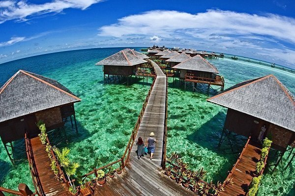
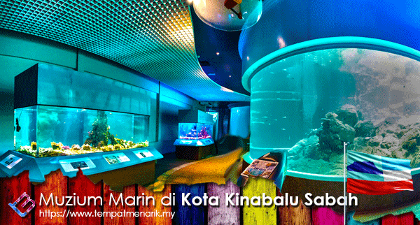
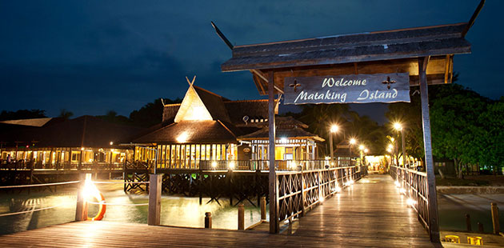
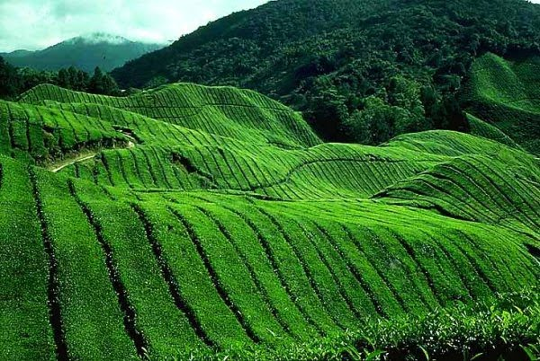
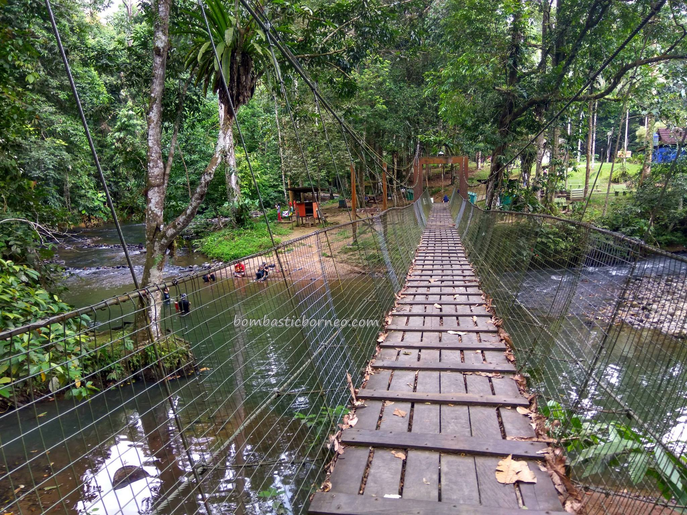

Borneo’s Sabah in East Malaysia showcases the best of Malaysia’s biodiversity. Pre-historic rainforest covers most of the state, where endemic proboscis monkeys and orangutans swing from the trees. Mount Kinabalu at 4,095 metres (13,435 feet) stands proudly as Malaysia’s tallest peak, with most travellers arriving at Kota Kinabalu (literally Kinabalu City) as a base for scaling this beast. Speedboats connect the city with Tunku Abdul Rahman Marine Park’s beach and snorkelling opportunities within minutes. Take a day trip to the northernmost ‘Tip of Borneo’ in Kudat and watch the fireflies in Kota Belud. If you want the jungle, spend a few nights in Danum Valley or the rarely explored Maliau Basin.

Mabul Island (Pulau Mabul)
Mabul is a small island off the south-eastern coast of Sabah in Malaysia. The island has been a fishing village since the 1970s. In the 1990s, it first became popular to divers due to its proximity to Sipadan island.

Aquarium & Marine Museum, Universiti Malaysia Sabah, Kota Kinabalu, Sabah.
Simple aquarium & marine museum with fish tanks, an open-water reef exhibition & mangrove walk.
Address: Jalan UMS, 88400 Kota Kinabalu, Sabah

Mataking Island (Pulau Mataking)
Mataking Island is a Malaysian island located in the Celebes Sea on the state of Sabah. Mataking Island is home to the first 'Underwater Post Office' in Malaysia and is connected to Pulau Mataking Kecil via a narrow sand bank.

Sabah Tea Resort
Address: KM 17, Jalan Ranau/Sandakan Kampung Nalapak, Beg berkunci, No.2, 89309 Ranau, Sabah

Tawau Hills Park
Tawau Hills Park, was established in 1979, primarily as a protection for the water catchment area of Tawau town, Sabah, Malaysia. It is located 24 kilometres from Tawau, and comprises 279.72 km² of lowland dipterocarp rainforest, surrounded by oil palm and cacao plantations.
Address: Tawau, Sabah